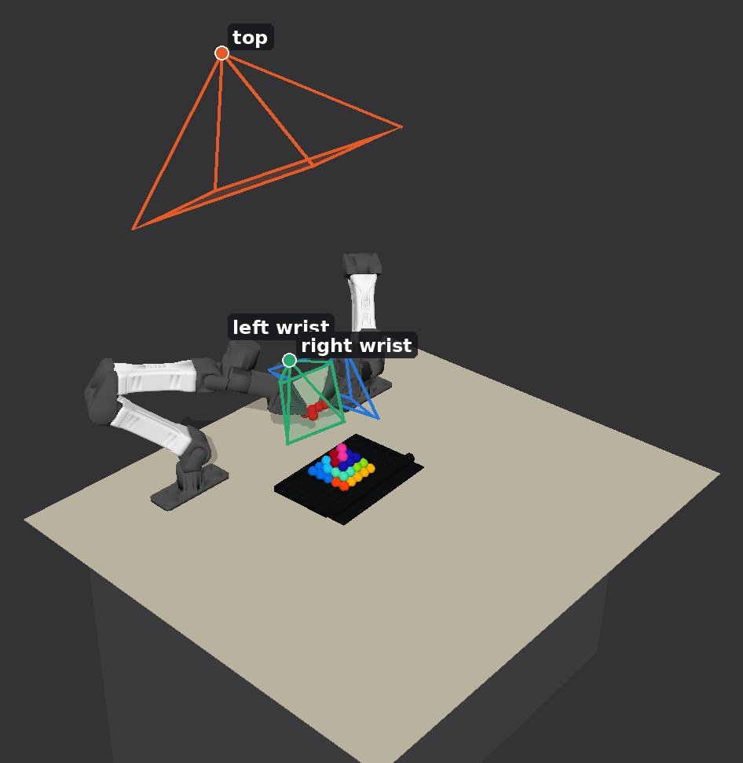
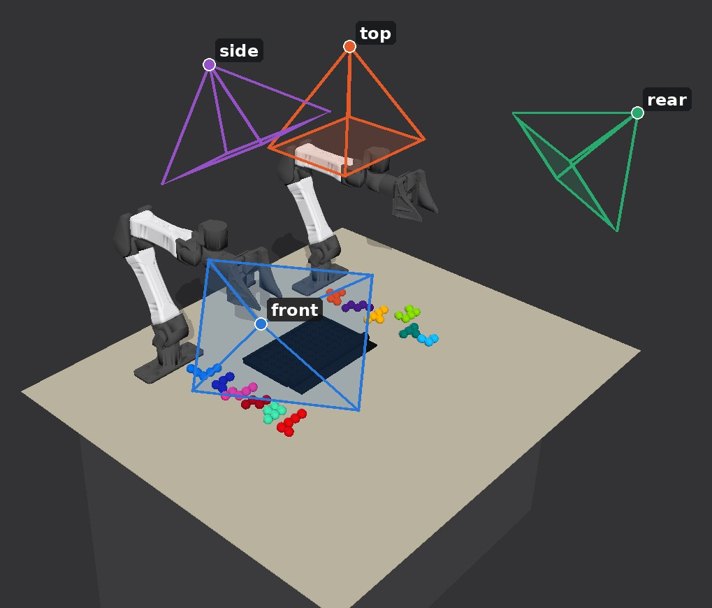
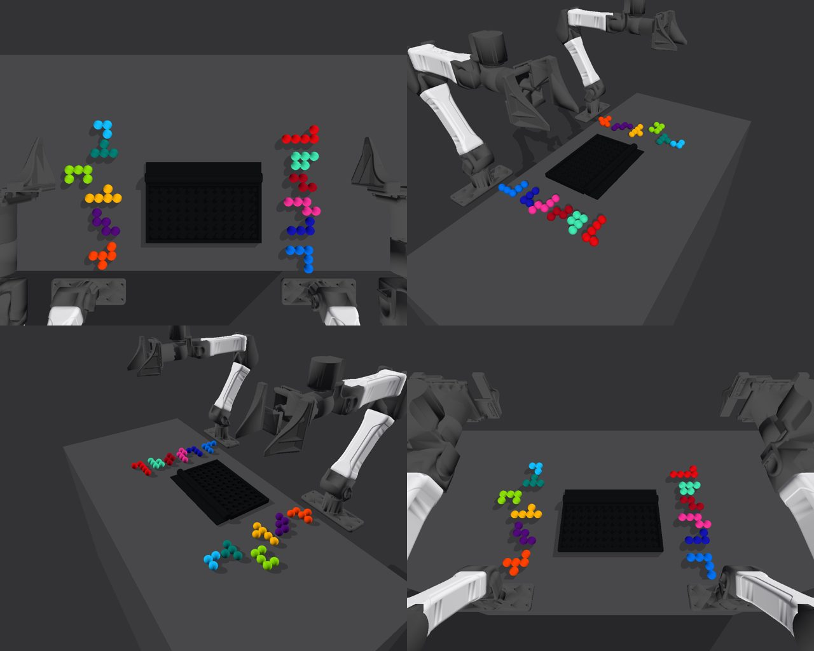
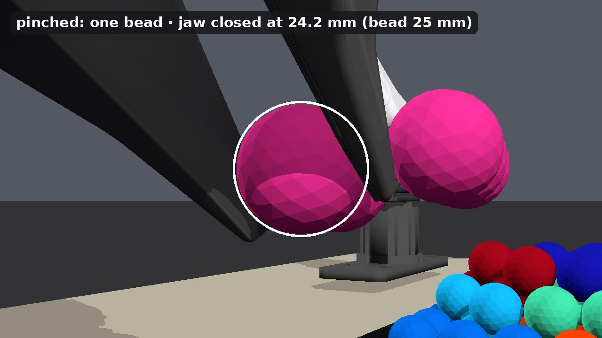
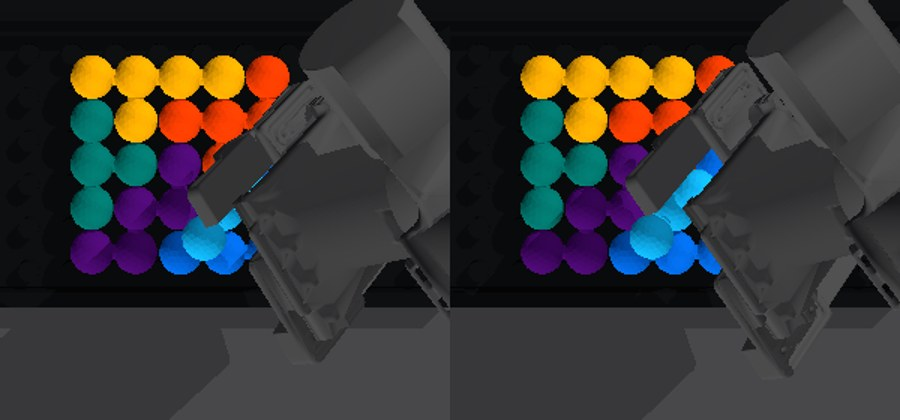
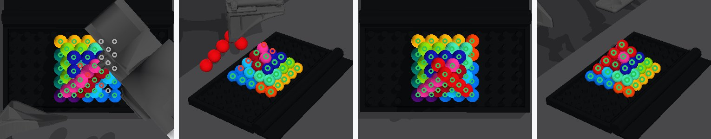
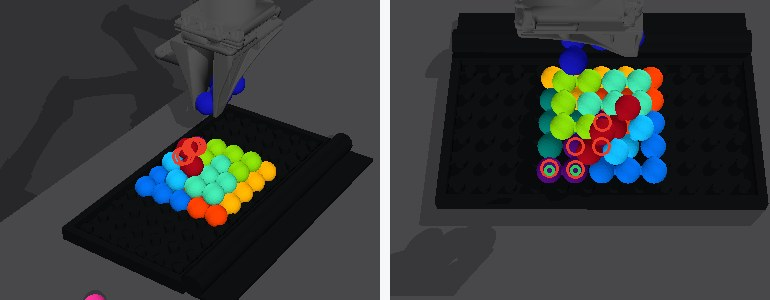

First built with four custom cameras around the table, then with the official YAM station cameras: one overhead and one on each wrist.
RoboSimStudioReal to sim
RealRSSDrag the line. Real frame: source video ↗ at 3:33; the sim rebuilds the same arrangement from the same viewpoint.
The source video, from 3:33.
Physics
MuJoCo-Warp on GPU
Robot
Two YAM 6-DoF arms, parallel jaws
Parts
12 rigid pieces made of 55 beads, 25 mm each
Goal
Every bead within 4 mm of its spot, still, hands home, 2 s

Official YAM station: one gantry D405 overhead, one D405 on each wrist (I2RT YAM station model ↗; wrist mounts as in the RoboSimStudio YAM arm). Shown at 677 s, while both wrists look at the case.The gantry camera at t = 0, and all three cameras during piece 12's hand-to-hand transfer; a free hand moves its camera to look.

Four fixed RGB cameras of our own placement: top, front, rear, side. Shown at the start of the run.

All the policy sees at t = 0: four fixed cameras.
Graph-as-PolicyWatch the graph execute
t = 0.0 s
t = 0.0 s
done, checkedrunningon error → stop↻ looks againClick a step or a piece to jump.
DexterityFour pieces end up standing on edge
piece 6 Passed from one hand to the other, then stood on edge.piece 12 The top piece: passed across and back, then stood on edge.piece 9 Tilted up in one hand and stood on edge.piece 11 Tilted up in one hand and stood on edge.
piece 6 Passed from one hand to the other, then stood on edge.piece 12 The top piece: passed across and back, then stood on edge.piece 9 Tilted up in one hand and stood on edge.piece 11 Tilted up in one hand and stood on edge.
faded copies: the piece's earlier posesarrows: its x / y / z axes (red, green, blue)yellow: the path

Two pads close on one bead (ringed), not between beads: closed at 24.2 mm, a bead is 25 mm.
Pinch one bead from both sides, just above its middle: 6 mm above the centre by default. Piece 11 held 10 mm up turned in the jaws; at 7 mm its carry error fell from 5–7 mm to 3.3–3.5 mm.
Pick a bead near the middle of the piece: a short lever keeps it from turning.
Open as the camera needs: 55 mm by default, 75 mm for piece 6 so a finger does not hide it, and in two quick steps for piece 8 so neither pad flicks it.
If the planned grip is out of reach, every bead and jaw direction is screened under the same checks.
Self-refinementProblems a trial exposed, and the fix
Let go of piece 8 cleanly 3 cameras
Before The gripper opened slowly; one pad let go late and flicked piece 8 sideways, 4.8 mm off its spots. Fix Open in two quick steps so both pads leave together. After It drops straight, 1.0 mm off.
Blocked from view is not moved 3 cameras
Before Piece 12, held above the case, covers piece 6's spots; the policy read them as "piece 6 has moved" and stopped. Fix Skip spots hidden by a held piece or the gripper. After Every spot it can see shows piece 6; the build finishes.
Open wider so the camera sees piece 6 land 4 cameras

Before At a 55 mm opening a finger hides piece 6, so the camera cannot confirm it landed. Fix Open to 75 mm, found by tracing camera rays past the finger. After Seen, 0.8 mm from its spots.
The robot confirms the pyramid is done by itself 4 cameras

Before All 12 pieces were in place, but the policy could not tell, so it would not finish. Fix Look at every spot that should hold a bead and check the right piece is there (green yes, red no). After With piece 12 missing it says no; with the pyramid done it says yes.
Keep piece 8 in view while piece 6 changes hands 4 cameras
Before While piece 6 changes hands, the arms block the camera's view of piece 8, and the robot has to wait. After Piece 8 starts 70 mm further out and stays in view.
A bad guess about piece 5 must not undo it 4 cameras

Before Only two beads of piece 5 are visible, and the policy guessed it had turned (red rings, which actually land on piece 9). After It checks piece 5's own spots, still filled by piece 5 (green), so it stays placed.
GeneralizationDifferent starts, same graph
Different starts and scenes; the same graph, official cameras only, builds every one to the finished pyramid.
Different starts and scenes; the same graph, four cameras, builds every one to the finished pyramid.